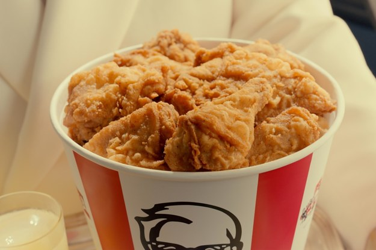
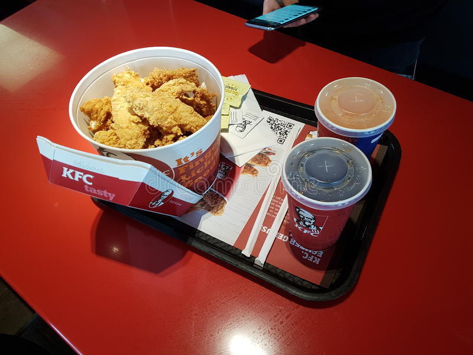

KFC
KFC (short for Kentucky Fried Chicken[6]) is an American fast food restaurant chain headquartered in Louisville, Kentucky, that specializes in fried chicken. It is the world's second-largest restaurant chain (as measured by sales) after McDonald's, with 22,621 locations globally in 150 countries as of December 2019.[7] The chain is a subsidiary of Yum! Brands, a restaurant company that also owns the Pizza Hut, Taco Bell, and WingStreet chains.[8] KFC was founded by Colonel Harland Sanders, an entrepreneur who began selling fried chicken from his roadside restaurant in Corbin, Kentucky, during the Great Depression. Sanders identified the potential of the restaurant franchising concept, and the first "Kentucky Fried Chicken" franchise opened in Utah in 1952. KFC popularized chicken in the fast-food industry, diversifying the market by challenging the established dominance of the hamburger. By branding himself as "Colonel Sanders", Harland became a prominent figure of American cultural history, and his image remains widely used in KFC advertising to this day. However, the company's rapid expansion overwhelmed the aging Sanders, and he sold it to a group of investors led by John Y. Brown Jr. and Jack C. Massey in 1964. KFC was one of the first American fast-food chains to expand internationally, opening outlets in Canada, the United Kingdom, Mexico, and Jamaica by the mid-1960s. Throughout the 1970s and 1980s, it experienced mixed fortunes domestically, as it went through a series of changes in corporate ownership with little or no experience in the restaurant business. In the early-1970s, KFC was sold to the spirits distributor Heublein, which was taken over by the R.J. Reynolds food and tobacco conglomerate; that company sold the chain to PepsiCo. The chain continued to expand overseas, however, and in 1987, it became the first Western restaurant chain to open in China. It has since expanded rapidly in China, which is now the company's single largest market. PepsiCo spun off its restaurants division as Tricon Global Restaurants, which later changed its name to Yum! Brands. KFC's original product is pressure-fried chicken pieces, seasoned with Sanders' recipe of 11 herbs and spices. The constituents of the recipe are a trade secret. Larger portions of fried chicken are served in a cardboard "bucket", which has become a feature of the chain since it was first introduced by franchisee Pete Harman in 1957. Since the early-1990s, KFC has expanded its menu to offer other chicken products such as chicken fillet sandwiches and wraps, as well as salads and side dishes such as French fries and coleslaw, desserts, and soft drinks; the latter often supplied by PepsiCo. KFC is known for its slogans "It's Finger Lickin' Good!", "Nobody does chicken like KFC", and "So good
where will you find it
You will find the kfc at right next to the sport check
STORE HOURS
MONDAY: 8:00 AM - 10:00 PM
TUESDAY: 8:00 AM - 10:00 PM
WEDNESDAY: 8:00 AM - 8:00 PM
THURSDAY: 8:00 AM - 8:00 PM
FRIDAY: 8:00 AM - 10:00 PM
SATURDAY: 8:00 AM - 10:00 PM
SUNDAY: 7:00 AM - 00:00 PM
SPECIALS  